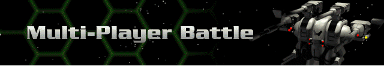

› |
› |
› |
Multi-Player Battle |

Multi-player is a turn-based game. Players move in the order their names appear on the Launch Multi-Player Menu. A timer appears in the upper right corner of the interface to show you how much time each player has left for their turn. When the timer reaches the 15-second mark, it flashes between red and white as a warning.
All player vehicles will appear in the color specified. During your turn you will have an interface identical to that of single-player battle. You will see all other players on both the mini-map and in the main view as long as they are within reach of your radar(s). All players start at opposing points of the mini-map hex. Two players will start exactly opposite each other at the map’s edge; three players will start equally spaced around the perimeter of the map, and so on.
Moving your Hercs, the control panels, damage model, and the pilot status screen all operate the same as with single-player mode. Just remember to keep an eye on the clock. If you have 30 seconds for your turn, then making repairs (if necessary), administering StimGland (if necessary), making your move (or multiple Herc movements), and firing all have to happen by instinct.
When it is not your turn, you will still be able to reconnoiter through the mini-map (see Views and Navigation) and send/receive communications. Players may send messages at any time by pressing the [Enter] key and typing away. The message dialog screen will also display all messages from other players who have you in their communication loop. To remove the dialog box, press ESC.
If you are eliminated from the game, you may only view the continuing battle and send/receive messages.